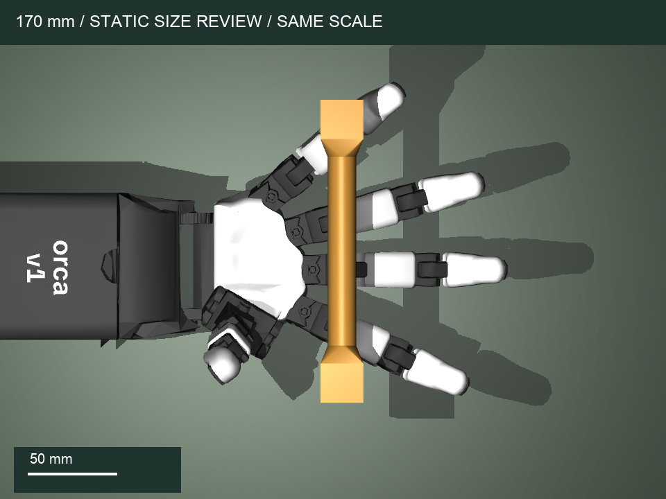
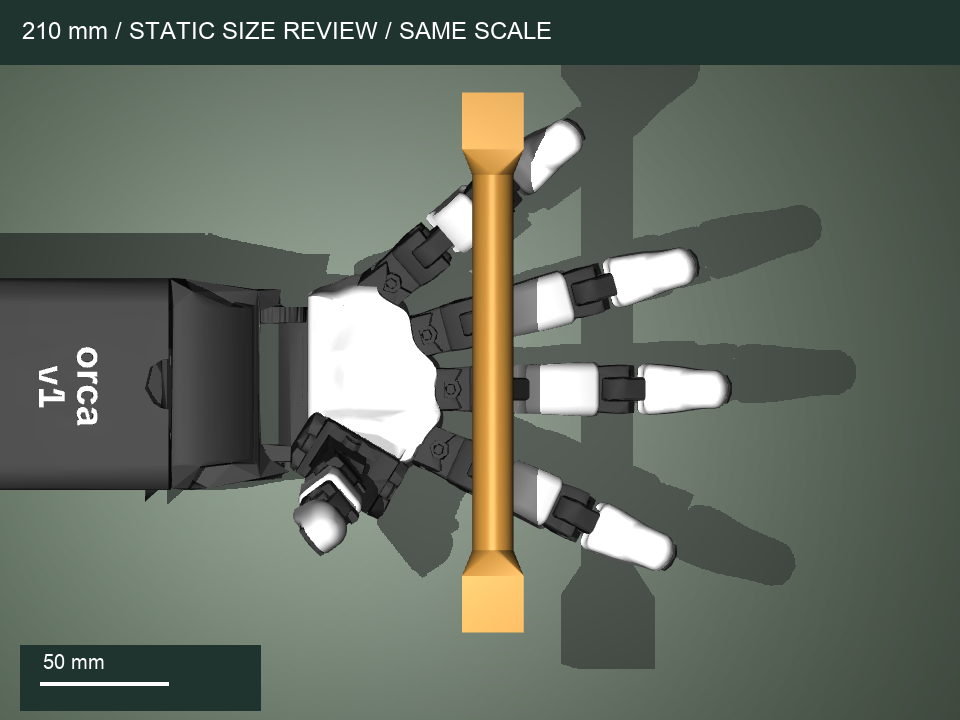
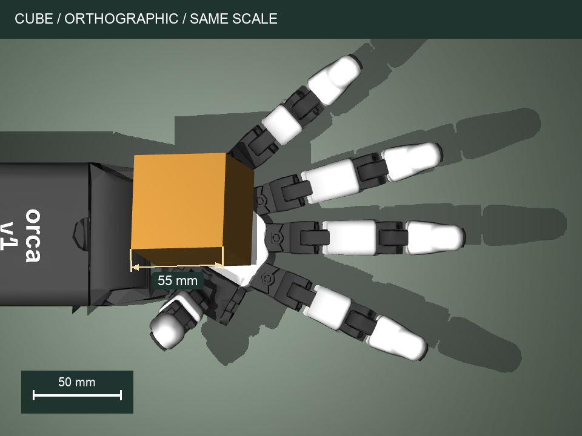
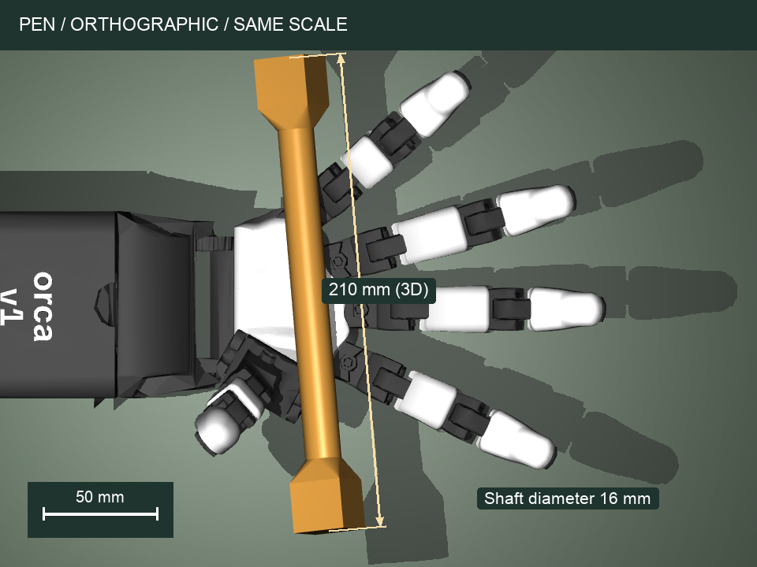
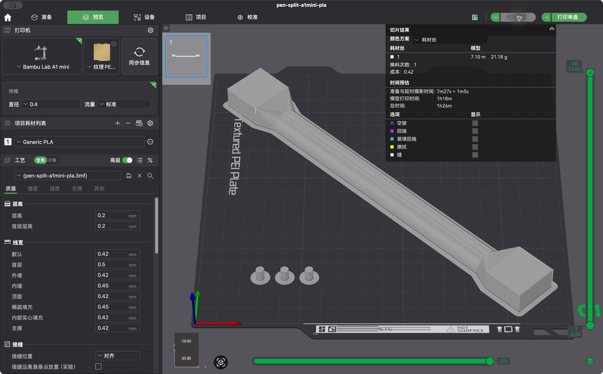
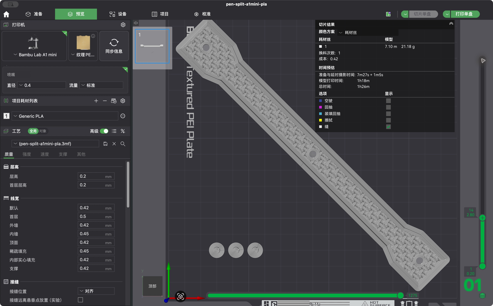

实物辨识
沿用舵机标定与调试器；测量编码器到关节的映射、速度、回差、皮肤摩擦与物体质量。
从一块有身份的方块、一支可观测的训练笔开始。把物体几何、视觉坐标、策略动作和舵机执行，接成同一条实验链。
17 × STS3215 MuJoCo + PPO AprilTag 36h11本页展示任务设计与真实尺寸模型。旋转动画是几何示意。新版策略尚未训练，4090 性能与真实硬件迁移尚待验证。
首版任务允许掌面支撑，手腕固定，物体六自由度自由运动。目标是掌内偏航转向，不等同于任意轴方块翻转或花式转笔。独立评估决定何时升级。
沿用舵机标定与调试器；测量编码器到关节的映射、速度、回差、皮肤摩擦与物体质量。
STL、仿真凸体、贴码角点由相同顶点生成。固定底座与手腕，复现掌心向上的安装方式。
15° → 45° → 90° → 多段转向。加入质量、摩擦、执行延迟、目标偏差和视觉丢帧。
对比静止和随机策略。报告成功率、掉落率、角度误差与置信区间，保存失败回合。
相机估计物体位姿，复用相同观测和动作编解码。先 dry-run，再用标定后的舵机范围执行。
误差 ≤8°，位移 ≤4 cm，连续稳定 0.5 秒。100 个留出回合；目标成功率 ≥80%，掉落率 ≤10%。这些是验收门槛，尚非结果。
同样的稳定标准，扩大初始化与动力学变化。先验证方块，再验证训练笔；支持同物体阶段续训。
不中断抓持连续完成四段转向。每段稳定后更新目标，掉落即失败；不代表任意轴操控。
之前的 170 mm 首先照顾了一体竖直打印，这是过早施加的制造限制。现在先看操作空间：保持 Ø16 mm 圆杆、24 mm 方头不变，对比 170、190、200、210、220、230 mm。210 mm 提供 146 mm 纯圆杆，比原来增加 40 mm，让方头向手指活动区外移动。它是工程起点，尚不是训练或真机实验证明的最优长度。


这两图固定相同手型、物体位置和姿态，使用相同正交相机与 50 mm 尺；仅作几何对照，未推进动力学，不表示手已抓住物体。下面的相交计数也不是成功率或真实碰撞概率。
在 X=190 mm 的前移检查区，4种固定手型 × 3个高度 × 37个偏航角，共444张静态快照中，170 mm方头与手指相交170次，210 mm为31次，220 mm为29次。210→220 在这个检查区收益小，而均匀实体近似的偏航惯量再增加约13%。该比较不能代替力闭合、接触稳定性或策略训练。
完整报告也保留X=135/170/190/210 mm四个位置，避免把单一位置当成全部工作空间。长笔仍可能在其他姿态碰到底座；初始化已从靠腕处前移，并且靠底座支撑不再计为手内成功。每个长度另做40次重力落稳检查，只验证初始支撑。
采用你的打印建议：210 mm半壳沿床面45°摆放，一盘一片，同工程打印两次。每盘另有3根定位销，第二盘的销可作备用。半壳平面包络约165.5mm见方，计入3mm brim与0.1mm间隙后，最小床边余量约4.2mm。220 mm同条件仅余约0.6mm。
以下两图使用相同的正交俯视相机，纵向视野均为 250 mm，每张附 50 mm 标尺。仿真掌部网格横向包络约 104 mm（含结构），不是实物测量。原来的远景包含底座、带透视，不适合判断大小。


采用专用视觉标记 AprilTag。两端同时可见时，用全部角点联合求解；只见一端时降级追踪并报告质量。不同面上的标签共享物体坐标，切换可见面时位姿定义保持一致。两端端面码补充较大角点，端部侧面码补充侧视角；方头、渐变肩部的碰撞与惯量均进入仿真，不把整支笔近似成一个凸包。单相机完全遮挡时仍无法估计位姿。
编码器估计关节角、上一目标、物体相对位置与完整旋转矩阵、目标旋转、视觉有效性和观测年龄。历史帧帮助处理延迟。接触信息只用于奖励和验收，不进入策略观测。
短时丢码保留最近位姿并标记年龄，同时保持关节目标；超过 250 ms 终止本次执行。后台采集避免控制循环等待相机。固定参考码与物体码均需质量检查。
固定 1080p 或以上相机，斜上方同时看到物体和旁边的参考码。近距离、固定焦距、短曝光、漫反射光。黑框约 40 px 是检测质量门槛起点，需要实测；严重遮挡时应增加第二视角，当前实现仅支持单相机多标签。
核对 WUJI 官方资料后，默认改为圆柱中杆与方形端头。这是面向 ORCA、A1 mini 的独立尺寸设计，使用标准 AprilTag，未直接移植 WUJI 的自定义码、打印件或策略。
平面落稳较容易，几何简单；但棱边会引入离散支撑和翻边接触。即使掌内定向学会，换成圆杆仍会改变滚动行为。
圆柱抓持段支持连续滚动，24 mm 方头容纳更大的 16 mm 黑框。代价是方头可能碰到手指，且改变惯量；仿真采用五个不重叠凸体精确分解，保留真实细杆空隙。
1:1 指几何尺寸和标记坐标统一。质量、摩擦与传动不会自动一致。A1 mini 官方打印空间为 180 × 180 × 180 mm。本设计不缩放，分别提供 PLA / PETG 原生 3MF 工程、标准 3MF 和已定向 STL。贴纸厚度不含在 CAD 中。
沿Z=0分成两个同形半壳，每片210 × 24 × 12mm。单片与3根定位销已经在原生工程内摆好；同一工程完整打印两次，获得2片半壳、3根使用销与3根备用销。不要自动重新摆放或缩放。
每片转45°，模型平面包络约165.5 × 165.5mm；含3mm brim和0.1mm间隙仍适配180mm热床，最小边距约4.2mm。与旧版两半同盘相比，多打一盘换来40mm额外操作圆杆，不用把笔长限制在170mm。
PLA、0.4mm喷嘴、0.2mm层高。半壳4层壁、方块3层壁；20% gyroid，顶底各5层。接缝平面有连续底层用于胶接，圆弧面不需外部支撑。三处盲孔封顶只跨约4.3mm。所有工艺写入原生3MF。
Ø4 × 6mm定位销，盲孔Ø4.3、深3.15mm，轴向位置Y=-94/0/+94mm。先试装、去毛边，不强压。薄胶、夹紧、完全固化，避免圆杆上留下胶凸起或接缝台阶。定位销只负责对齐，胶接强度和公差仍需实打验证。
填充百分比不是密度百分比；外壁、接缝底层、胶与纸都会加料。当前笔名义质量约40.2g，必须称带胶、纸的成品后输入 --mass-kg。默认惯量是均匀实体近似，打印分布的误差需要辨识和随机化。
完整210mm笔虽然也能沿床面对角线放下，但方头着床时，中段146mm圆杆底部悬空4mm，需要支撑；空间倾斜同样增加悬垂。pen-assembly-reference.3mf、pen.stl是装配参考，直接打印请用pen-split-a1mini-pla.3mf。


尚无实打、胶接强度或真机操控验证。模型/打印/SVG/PDF/PnP采用同一尺寸定义，纸张和打印驱动的真实缩放仍需用尺检查。
原生 MuJoCo 在 CPU 多进程采样，PPO 网络可用 CUDA。这不是 GPU 物理仿真，速度可能受 CPU 与接触计算限制。4090 路径需要在目标机器首次验证。
git clone https://github.com/George121380/ORCA_Hand_Feetech_Version.git cd ORCA_Hand_Feetech_Version bash scripts/setup_4090.sh source .venv/bin/activate python scripts/manipulation.py train --object cube --angle 15 \ --steps 3000000 --num-envs 16 --device cuda \ --output runs/cube-15 python scripts/manipulation.py evaluate \ --checkpoint runs/cube-15/policy.zip --episodes 100 \ --output runs/cube-15-eval
步数为预算起点，不承诺在该预算内学会。先执行 GPU 自检与短程 smoke；提高角度前先看留出集表现。
训练、断点续训、评估、视频、打印资产、标签、相机标定、位姿跟踪、dry-run 与舵机执行入口。参数、关节顺序和几何版本随 checkpoint 保存。
实机顺序：标定 → 静态位姿检查 → dry-run → 空载低速执行 → 手动放置物体 → 短时闭环。固定底座，准备接物托盘。
查看 GitHub 仓库 ↗